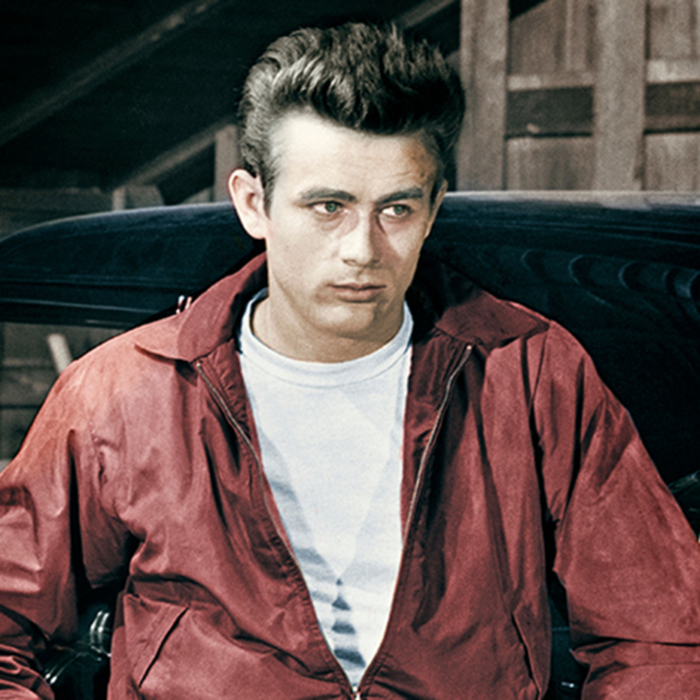
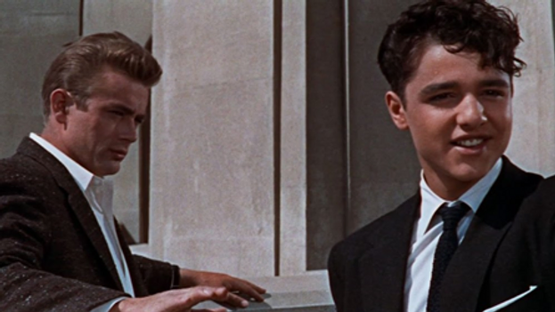

The Need for a Father Figure
The movie Rebel Without a Cause starring James Dean makes the need for having a strong father figure in your life extremely evident. Both Jim, the main character, and Plato, a large side character in the movie struggle with their individual connections with their fathers. Plato, missing his, and Jim, upset that his dad does not have the idealized personality of a 1950s man, while also not being able to give him much needed advice throughout the entire course of the movie. This is specifically brought to light when Jim comes home after being challenged to a game of Chickie Run and asks his dad “What can you do when you have to be a man?”. After his dad responds with the idea to draw a pro-con list, it is clear that Jim needs a father figure that will give him the “direct answer” he desires in this situation. A man that does the cleaning and isn’t opinionated was extremely uncommon in the 1950s, therefore, you can see how much society has changed to recent times when there’s not much of a stereotype around this idea.

Moving on to Plato, it is clear that if he had a father figure, he would have turned out far different. Plato desires attention because his parents’ neglect for him created a deep depression. This is visible at the beginning of the film when he is in the police station for shooting dogs. Although this scene may be deeper than this blog goes into, this was caused by his loneliness. Thus, with a strong father figure in his life, similar to the one Jim desires, his path would have most likely been much more positive. This is why he pushes for Jim to become this idealized man for him and tries to be around him as much possible. But you can see his depression kick in again when he wakes up alone and becomes scared yet violent.

Essentially, this film shows how the stereotyped father figure is genuinely a necessity for children who are attempting to be “normal”. They want someone to model as and without a guide, this becomes an extreme difficulty. The need for a father figure used to be the difference between a good and bad life, thankfully, this norm has been removed from the majority of society and although living without a father is difficult to deal with in the current decade, it does not make one’s life impossible as it evidently did in the 1950s for Jim and Plato.